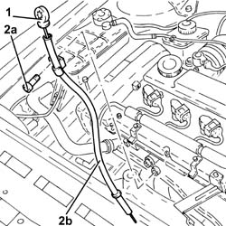
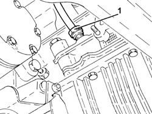
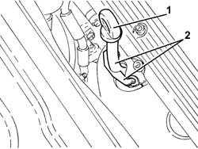
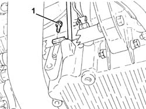
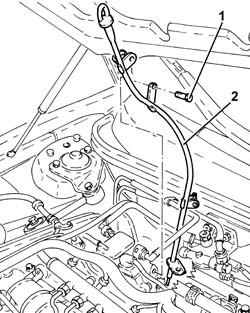

1084A16 OIL DIP STICK PIPE - R R
- Path
- Procedures > 10 ENGINE UNIT > 1084 ENGINE LUBRICATION SYSTEM > 1084A INDICATORS/CHECK DEVICES > 1084A16 OIL DIP STICK PIPE - R R
- Kind
- repair procedure (removal / refitting; the operation number is the code)
- Applies to
- all engines; all production periods
- Interactive page
- https://sloeber94.github.io/elrnDB-aGt/en/#/125001148
Applies to: engines: 2.0 JTS; all production periods
 Removing
Removing
 Refitting
RefittingProceed with removal
Op. 1016A40 IGNITION COIL COVER ON CYLINDER HEAD- R+R
1. Remove the engine oil dipstick.
2. Undo the bolt (2a) and remove the engine oil dipstick pipe (2b).

Applies to: engines: 2.0 JTS; all production periods
Refitting
RemovingPlace the complete engine oil dipstick tube back in its housing and fix it using the bolt.
Place the engine oil dipstick back in its seating.
Proceed with refitting
Applies to: engines: 3.2 V6; all production periods
Removing
RefittingPosition the vehicle on the ramp
Proceed with removal
Op. 7055B54 UNDER-ENGINE GUARD - R R
1. Undo the nut securing the engine oil dipstick to the engine block.

Applies to: engines: 3.2 V6; all production periods
1. Withdraw the oil level dipstick.
2. Remove the tube for the engine oil dipstick releasing it from the fastenings on the upper bracket.

Applies to: engines: 3.2 V6; all production periods
Refitting
RemovingPlace the tube for the engine oil dipstick back in its housing, and secure it to the upper bracket.
Tighten the nut securing the tube for the oil dipstick to the engine block.
Proceed with refitting
Op. 7055B54 UNDER-ENGINE GUARD - R R.
Place the engine oil dipstick back in its housing.
Remove the car from the ramps.
Applies to: engines: 1.9 JTD 16V; all production periods
Removing
RefittingPosition the vehicle on the ramp
Proceed with removal
- 1016A10 sound-proofing cover - r + r
Proceed with removal
1. Undo the lower bolt fastening the engine oil dipstick pipe to the crankcase sump.
Op. 7055B54 UNDER-ENGINE GUARD - R R

Applies to: engines: 1.9 JTD 16V; all production periods
1. Undo the upper bolt fixing the engine oil dipstick tube to the pressure pump mounting.
2. Remove the tube for the engine oil dipstick releasing it from the fastenings on the electrical wiring.

Applies to: engines: 1.9 JTD 16V; all production periods
Refitting
RemovingPlace the tube for the engine oil dipstick back in its housing, and secure it to the electrical wiring using the bands.
Tighten the upper bolt fixing the engine oil dipstick pipe to the pressure pump mounting.
Tighten the lower bolt fixing the engine oil dipstick pipe to the crankcase sump.
Proceed with refitting
Op. 7055B54 UNDER-ENGINE GUARD - R R.
Proceed with refitting
- 1016A10 sound-proofing cover - r + r
.
Remove the car from the ramps.
Applies to: engines: 1.8 T.SPARK; all production periods
Removing
Refitting1. Remove the engine oil dipstick.
2. Undo the nut (2a) and remove the engine oil dipstick pipe (2b).

Applies to: engines: 1.8 T.SPARK; all production periods
Refitting
RemovingPlace the engine oil dipstick tube back in its housing and fix it using the bolt.
Place the engine oil dipstick back in its seating.
Topics linked from this page (2)
Topics that link to this page (9)
- 1020A20 CRANK CASE OIL SUMP - R + R CLEAN SEALS FOR SEALANT APPLICATION
- 1020D14 FRONT CRANK SHAFT OIL SEAL COVER - R + R AND REPLACE SEALS FOR VERSIONS WITH OIL PUMP ON CRANK SHAFT, TIMING SIDE
- 1020D26 FLYWHEEL SIDE OIL SEAL COVER - R+R
- 1020D30 OIL SEAL COVER, FLY WHEEL SIDE - R + R AND REPLACE SEALS
- 1084B26 EMGINE OIL INTAKE DUCT - R R
- 2710A32 INTERMEDIATE DRIVE SHAFT BEARING SUPPORT - R + R WITH INTERMEDIATE DRIVE SHAFT REMOVED
- 2710A35 INTERMEDIATE DRIVE SHAFT MOUNT - R R
- 4130B32 POWER STEERING PUMP MOUNT - R R
- 5530A10 ALTERNATOR - R+R